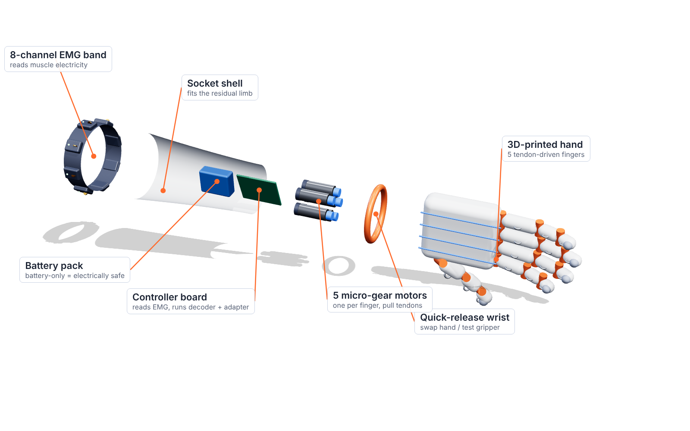
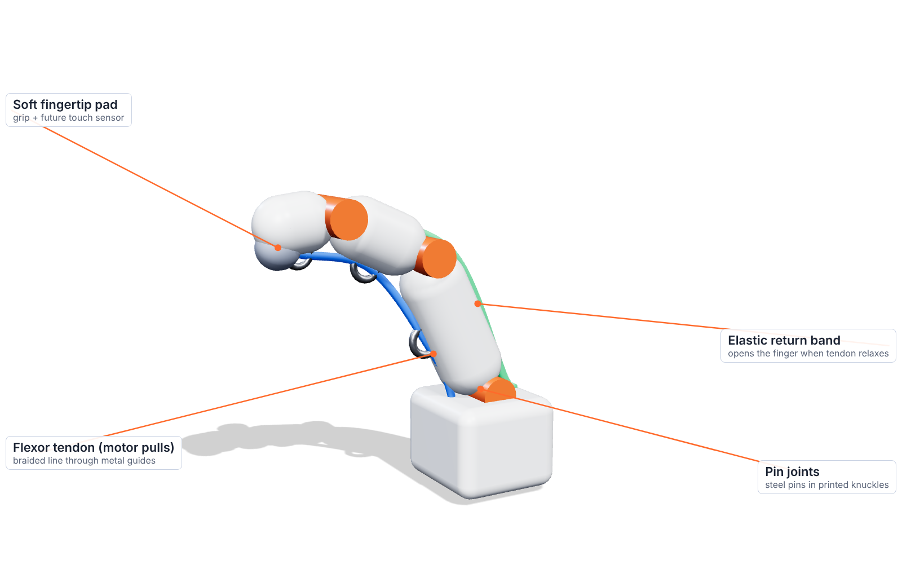

ISEF · Robotics & Intelligent MachinesSabahın alimləri XVI
A prosthetic hand that keeps learning its owner.
A low-cost myoelectric hand whose control software adapts while it is used, so it stops failing when muscle signals change with sweat, fatigue or a shifted sensor.
Good bionic hands are expensive, and their control drifts
Myoelectric hands cost roughly $15k–$100k+. Their decoders are trained once, then slowly fail as the skin signal changes. Control problems are a commonly cited reason people stop using them.
GAP
Adaptation exists, but only when the user asks for it
Commercial pattern-recognition systems retrain when the user presses a calibrate button or records new samples in an app. Continuous, label-free adaptation is still a research topic, tested on lab-grade hardware.
PRODUCT
Low-cost hand + 8-channel EMG band + an adapting decoder
A 3D-printed tendon-driven hand, a home-built EMG armband, and software that keeps improving the decoder from everyday use. The learning signal comes from task outcomes, not manual labels.
PROOF
Stays accurate for hours while a frozen decoder decays
We induce realistic drift (electrode shift, fatigue, sweat) and measure accuracy and task success over time. We compare a frozen decoder, manual recalibration, and our adaptive decoder.
Explained like you're ten
When you think "close my hand", your arm muscles make tiny electric sparks, even if the hand is missing. Stickers on the skin can hear those sparks, and a small computer guesses what you want and moves a robot hand.
The problem is that the sparks sound a little different every day: when you sweat, when you're tired, or when the sticker slides a bit. The computer starts guessing wrong, the hand gets annoying, and people stop wearing it.
Our hand keeps listening and learning, so it gets better while you use it instead of worse.
The one-sentence engineering goal (draft, you must rewrite it): Keep grip-intent accuracy at or above X% over a T-hour session with induced drift, without any manual recalibration, compared with a frozen decoder and a manually recalibrated one. Numbers X and T are yours to set after the Phase 0 experiments.
Self-Adapting Myoelectric Hand · Project Brief v0.12
02 · The real-world problem
A hand you can't control is a hand you stop wearing
$15k–$100k+
Typical price range for myoelectric hands, depending on source and features. Even a "low-cost" bionic hand sits at about $15k–$25k.
9% → 50%+
Reported upper-limb prosthesis rejection rates vary widely by study. Control and comfort are the recurring reasons.
~500
Azerbaijani war veterans who received ~600 imported high-tech prostheses since 2020 (government figures).
Why control fails: the signal changes, but the decoder doesn't
Surface EMG is unstable. The same intended movement produces a different signal pattern when:
Electrode shift the band rotates a few millimetres when put on again
Sweat skin impedance changes during the day
Fatigue tired muscles fire differently
Arm position raising the arm changes the muscle pattern
A decoder trained in the morning slowly gets worse. Today's fix is recalibration: the user stops, presses a button or opens an app, and records new examples. That is tedious, so users put it off, accuracy drops, frustration grows, and the hand goes in a drawer.
This chart is the hypothesis we will test, not a result. The whole project is about replacing this picture with real measurements.
Sources: price and abandonment reviews, Ministry of Labour and Social Protection; see page 123
03 · How a body talks to a machine
There is no "one-to-one" wire. There is a decoder that guesses.
Nobody connects a hand directly to the brain one-to-one, not even the best labs. Every real prosthetic reads a signal and guesses intent. The question is only which signal.
Where we read
How
Signal quality
For us?
Brain implant
neurosurgery
very rich
No unsafe and illegal for a student project
Nerve implant
surgery on the limb
rich
No
Surface EMG (muscles)
electrodes on the skin
good but drifts
Yes what commercial hands use
EEG (scalp)
cap on the head
noisy, slow, few commands
Possible (NeuroFlex, ISEF 2025) but weaker
The full loop, step by step
Two directions. Our project covers body → hand (control). The reverse, hand → body (feeling touch), is a separate and harder problem. A cheap non-invasive version is a vibration motor on the skin that buzzes harder as grip force rises. Treat it as a stretch goal, not the core.
Self-Adapting Myoelectric Hand · Project Brief v0.14
04 · What already exists
Products and research closest to our idea
Product / work
What it does
Adaptation
Cost
Ottobock Myo Plus commercial, FDA-cleared 2019
8-electrode pattern recognition; app shows patterns, user can add training recordings during daily life
User-triggered
premium (not public)
Coapt Gen2 commercial
Pattern recognition controller; a physical button starts "quick recalibration"
User-triggered
via clinics (not public)
PSYONIC Ability Hand
Robust multi-grip bionic hand with touch feedback, marketed as cheaper than incumbents
Depends on controller
~$15k–$25k
Open Bionics Hero Arm
3D-printed, custom-fit myoelectric arm
Threshold / grip modes
quote-based, lower tier
bebionic / i-Limb
Premium multi-articulating hands
Depends on controller
premium (not verified)
Open-source printed hands e-NABLE, InMoov etc. (from memory)
Very cheap; mostly body-powered or simple 1–2 channel on/off EMG
None
tens to hundreds of $
Betthauser et al. 2024 research
RL + sequential regression decodes 7 finger/wrist DoF; adapts while the user moves freely; 9 non-amputee subjects
Continuous
lab hardware
Deng et al. (Bath) research
Unsupervised online adaptation of a latent representation under electrode shift
Continuous
lab hardware
Visual-feedback co-adaptation, 2025
Shows the user their own pattern separability so the human adapts too
Human + decoder
lab hardware
Our hand
Low-cost printed hand + DIY 8-ch band + continuous outcome-driven adaptation, tested on real hardware with induced drift
Continuous, label-free
target: hundreds of $ (to verify)
Positions are qualitative, from public product pages and papers; prices are rough, see sources5
05 · The gaps we can own
Where the field is weak, and where we fit
GAP 1
Recalibration is manual
Commercial systems (Myo Plus, Coapt) adapt only when the user records new examples or presses a button. Nothing we found keeps adapting from normal use without labels.
GAP 2
Cheap hands have crude control
Low-cost and open-source hands mostly use 1–2 channel on/off thresholds. Pattern recognition and adaptation stay in the $15k+ tier.
GAP 3
Adaptive research lives on lab hardware and datasets
Continuous-adaptation papers use research-grade amplifiers or offline datasets. Whether it survives on cheap, noisy sensors is open.
GAP 4
Drift is rarely tested on purpose
Many evaluations are short sessions. A controlled drift protocol (shift, fatigue, sweat, arm position) on low-cost hardware is a clean experimental contribution.
Our wedge, in one line
Continuous, label-free adaptation on hardware a clinic in a low-income country could afford, proven under controlled drift.
Honesty check before you claim novelty. "Nothing we found" is not "nothing exists". Before the annotation deadline, each of you spends two evenings on Google Scholar and arXiv searching "online adaptation myoelectric low-cost", "unsupervised EMG decoder drift" and "reinforcement learning myoelectric". Write down the 5 closest papers and exactly how we differ. A judge who knows the field will ask.
Why RL, and is it really RL?
A judge will ask why not just retrain a classifier. Our answer: during real use nobody tells the decoder the correct label. It only sees outcomes (the grasp worked, or the user corrected it). Learning from outcomes instead of labels is the reinforcement-learning setting.
Decision for you: each decision is one step (window → grip class → outcome). That is technically a contextual bandit, the one-step special case of RL. Is that enough, or does your design need multi-step credit assignment (e.g. a grasp sequence)? Decide and be ready to defend the term you use.
Self-Adapting Myoelectric Hand · Project Brief v0.16
06 · The product
What it physically is

Module
Function
Owner
Design target (to confirm)
EMG band
8 surface electrodes + analog front end
Friend
stable contact, battery-only power, ≥1 kHz sampling per channel
Controller
reads EMG, runs decoder + adapter, drives motors
Both (interface)
end-to-end latency low enough to feel instant (literature often cites ~100–300 ms; verify)
Actuators
5 micro-gear motors with tendon spools
Friend
enough force to hold a filled cup; current sensing for grip force
Hand
3D-printed tendon-driven fingers, elastic return
Friend
light; 3+ grip types (power, pinch, point)
Socket / test mount
holds everything; for testing, a bench mount (no amputee)
Important: during testing nobody wears the hand as a prosthesis. A tester wears the EMG band on their own forearm and the hand sits on a stand next to them. This keeps the project safe and focused on the control problem.
3D renders are concept visuals, not final CAD. Real CAD is your friend's job (Fusion 360 / Onshape)7
07 · Mechanism
One finger, the building block

How it moves
A motor in the forearm winds a tendon (braided line) on a spool.
The tendon runs along the palm side through metal guides, so pulling it curls all three segments.
An elastic band on the back pulls the finger open when the motor relaxes.
This is underactuated: one motor, three joints. The finger wraps around objects of different shapes automatically.
Questions for the mechatronics side
How much tendon force is needed to hold a 500 g cup? Pick the motor from that, not the other way round.
How will you measure grip force? Motor current is cheap; a force sensor in the fingertip is better.
What breaks first after 1,000 grasps: the tendon, the pin holes or the elastic?
Before the full hand, build a one-finger test rig (finger + one motor + one EMG channel). It de-risks the mechanism, the motor driver and the software interface in week 2–3, instead of finding problems in week 8.
Self-Adapting Myoelectric Hand · Project Brief v0.18
08 · The learning system
Decoder + adapter: two layers of intelligence
LAYER 1 · BASE DECODER
Learned once, offline
A 5-minute calibration session: the user performs each grip on cue; we train a classifier on windowed EMG features. Start simple (LDA is the classic baseline), then try a small neural net. This is also our "frozen decoder" baseline.
LAYER 2 · ADAPTER
Learns continuously, online
During use, every decision gets an outcome. The adapter makes small, safe updates (e.g. only the last layer, or a feature-normalisation layer) so the decoder tracks the drift without forgetting.
The RL formulation (draft, yours to own)
Piece
Our draft
Open question
State
features of the last EMG window (8 channels × a few features) + recent context
Which features survive cheap hardware best?
Action
chosen grip class (open / power / pinch / point / rest)
Discrete classes or continuous grip force?
Reward
see the three options below
The central research question
Update
small policy-gradient or bandit-style update, rate-limited, with rollback if accuracy collapses
How do we stop it learning the wrong thing?
Where does the reward come from? (your decision)
A · Explicit User taps a button or makes a "no!" gesture when the hand is wrong. + clean signal · − annoying
B · Task outcome A game or task (move blocks) knows if the grasp succeeded. + objective · − only during tasks
C · Implicit correction If the user immediately switches intent, the last decision was probably wrong. + zero effort · − noisy, novel
Mentor note: C is the most novel and the most risky. B is the safest for the competition. A strong plan might be: prove the method with B, then show C works partly. Argue it out between you two and write down your choice and why.
Self-Adapting Myoelectric Hand · Project Brief v0.19
09 · How we prove it
Experiment plan
Hypotheses
H1. Under induced drift, the adaptive decoder keeps higher intent accuracy over a session than the frozen decoder.
H2. The adaptive decoder reaches accuracy similar to manual recalibration, with zero recalibration time.
H3. Higher accuracy translates into more successful grasps in a standard object-transfer task.
Three conditions, same person, same session plan
Condition
What happens
Frozen
train once at the start, never update
Manual recalibration
user recalibrates at fixed times (the commercial approach)
Adaptive (ours)
continuous updates from the reward signal, no manual step
Controlled drift protocol
Shift remove and re-don the band, rotated ~1 cm
Fatigue a fixed grip-hold exercise between blocks
Position arm down / forward / up
Time repeat over a long session
Metrics
Intent accuracy per block, on cued trials where the true intent is known.
Task success: objects moved per minute in a box-and-blocks-style task (a standard clinical test).
Recalibration time saved, in minutes per session.
Latency: from muscle onset to motor start.
Phase 0 needs no human testing. Start with a public EMG dataset (NinaPro is the best known; verify licence and content). Simulate drift by shifting channels and scaling amplitudes, and show the adapter beats the frozen decoder offline. That gives you results to put in the annotation even before the hardware works.
Statistical plan: repeated sessions per condition, report mean ± spread, test with a paired comparison10
10 · Team and timeline
Who does what, and the contract between you
YOU · SOFTWARE & LEARNING
Phase 0 offline experiments on public data
Signal pipeline: filtering, features, logging
Base decoder + adapter + reward logic
Experiment scripts and analysis
FRIEND · MECHATRONICS
EMG front end + 8-channel band
Finger rig → full hand, motors, drivers
Controller board, power, safety
CAD, printing, durability tests
The interface contract (write it in week 1): the exact message the hardware sends to the software (channels, sample rate, units, timestamps) and the exact command the software sends back (grip class, force, rate). Team projects usually fail here, not inside either half. You must each be able to explain the other's half to a judge.
Dates are planning estimates. The annotation deadline (about the end of January) and the final (early March) are inferred from last year's cycle; confirm both on the official site this week.
Self-Adapting Myoelectric Hand · Project Brief v0.111
11 · Risks, rules and open questions
What could kill the project, and your homework
Risk
Mitigation
Human-participant rules
ISEF-style rules require approval before testing on any person, including yourselves. Read the national rules now, prepare the forms in week 1, and do Phase 0 on public data while you wait.
Electrical safety
Battery-only power for anything touching skin; never connected to mains or a wall-powered laptop during sessions. Use an isolated link (wireless or battery laptop).
DIY EMG too noisy
Test one channel in week 2. If quality is poor, use ready-made EMG sensor boards and spend the effort on the learning side.
Adapter learns the wrong thing
Rate-limit updates, keep a frozen copy, roll back if accuracy on cued trials drops.
Not novel enough
Do the literature check on page 6. Make the drift protocol and low-cost hardware the explicit contribution.
Timeline
Phase 0 results protect you: even if hardware slips, you have offline data for the annotation.
Your homework (answer before the next session)
1. Rewrite the engineering goal on page 2 with real numbers you believe are reachable.
2. Choose the reward signal (A, B or C on page 9) and write three sentences defending it.
3. Friend: list the parts you already have, and estimate the cost of the rest. Fill the BOM yourselves.
4. Find the official deadlines and the human-participant rules for Sabahın alimləri XVI.
5. Pick a codename. It goes on the poster.
Sources
Betthauser et al., Online Adaptation for Myographic Control (arXiv 2412.17991)
Visual Feedback of Pattern Separability Improves Myoelectric Decoding (arXiv 2505.09819)
Deng et al., Online unsupervised adaptation of latent representation (University of Bath research portal)
Ottobock Myo Plus product and newsroom pages (ottobock.com, corporate.ottobock.com)
Coapt Gen2 handbook; FDA 510(k) K191083 summary
Ability Hand and Hero Arm pricing: disabilityhorizons.com, thepricer.org, scienceinsights.org (rough figures)